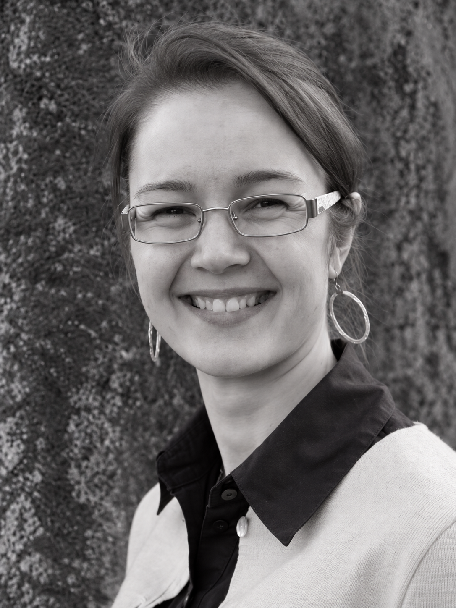

Logoterapia
Kun kaipaat suuntaa, merkitystä tai tilaa pysähtyä elämäntilanteesi äärelle. Keskusteluapu auttaa kuulemaan omia ajatuksia ja tunnistamaan voimavaroja.
Tutustu logoterapiaan →Tilaa pysähtyä
ELVYN tarjoaa logoterapeuttista keskusteluapua ja luonnollisia turvehoitoja — rauhassa, läsnäollen ja sinun elämäntilanteestasi käsin.
Palvelut
Voit tulla sellaisena kuin olet. Tutkimme yhdessä, mikä juuri tässä hetkessä auttaisi pysähtymään, selkiyttämään suuntaa tai hellittämään kehossa.
Kun kaipaat suuntaa, merkitystä tai tilaa pysähtyä elämäntilanteesi äärelle. Keskusteluapu auttaa kuulemaan omia ajatuksia ja tunnistamaan voimavaroja.
Tutustu logoterapiaan →Lämpöä, rauhoittumista ja luonnollista hoivaa keholle. Hoito tarjoaa oman hetken, jossa kiire saa hellittää ja aistit voivat palata tähän hetkeen.
Tutustu turvehoitoihin →
Minusta
ELVYN on yhden ihmisen yritys. Siksi myös palvelu saa olla henkilökohtaista, lempeää ja kiireetöntä. Tähän kohtaan tuodaan Annan oma tarina, koulutus, pätevyydet ja tapa kohdata asiakas.
Käytännössä
Tapaamisen kulku ja paikka tarkentuvat palvelun edetessä. Tärkeintä on, että saat olla rauhassa.
Logoterapeuttinen keskustelu voidaan mahdollisuuksien mukaan toteuttaa myös etänä.
Palveluiden kestot, hinnat ja ajanvarauslinkit lisätään tähän ennen julkaisua.
Ota yhteyttä
Ajanvarauksen yhteystiedot ja varauslinkki lisätään tähän, kun ne ovat vahvistettu.